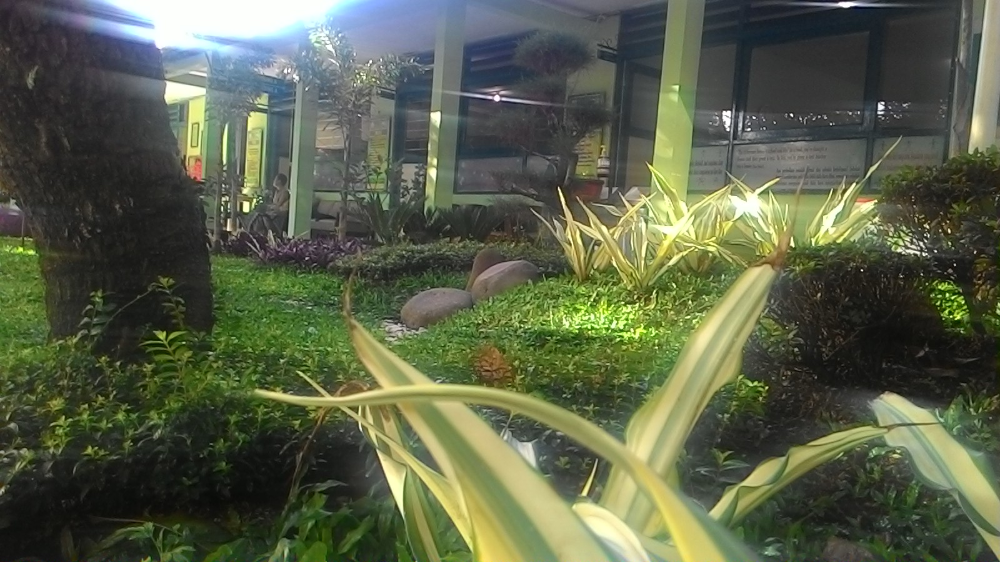
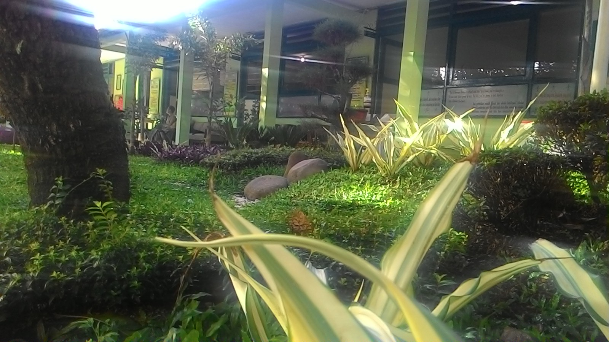

SMKN 11 Bandung


SMK Negeri 11 Bandung merupakan salah satu Sekolah Menengah Kejuruan Negeri yang ada di Provinsi Jawa Barat, Indonesia, tepatnya di kota Bandung bagian Barat. Sama dengan sekolah menengah pada umumnya di Indonesia, masa pendidikan sekolah di SMKN 11 Bandung ditempuh dalam waktu tiga tahun pelajaran, mulai dari Kelas X sampai Kelas XII. Sekolah ini mewajibkan siswa-siswinya untuk mempelajari bahasa internasional seperti Bahasa Inggris, Bahasa Jepang, Bahasa Mandarin serta menyediakan ekstrakulikuler Bahasa Perancis untuk menunjang kegiatan pertukaran pelajar yang sering diadakan sekolah ini dengan sekolah-sekolah dari negara lain. Selain itu, sekolah ini juga mengedepankan moto Bersih Radius Satu Meter.